|
Roda JC - FC Twente (2-0) 13 augustus 2005
|
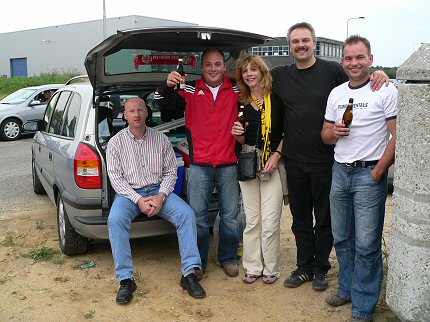
Op weg naar het stadion kwamen we deze vrolijke Duitsers tegen uit de
omgeving van Kassel. Ze hadden erg lekker bier bij zich!
(Für
die Originalbilder meldet euch bitte an dieser Adresse: koempel@koempel.nl)
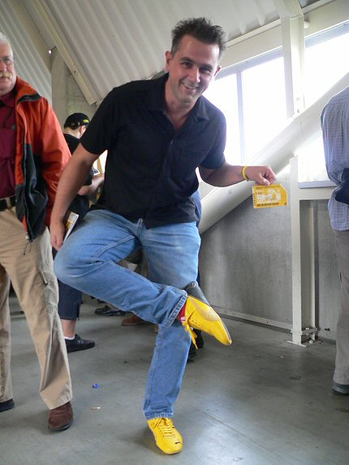
RML-massah Roger toont trots zijn gele sneakers en is bovendien in het
bezit van een FAK-kaart (= fake).
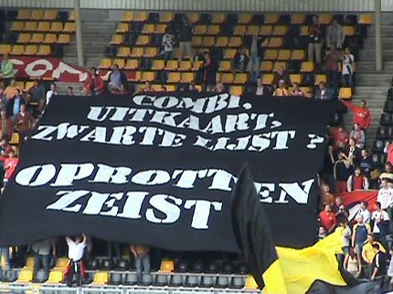
Combi. Uitkaart. Zwarte lijst? De kritiek van de Tukkers richting Zeist is
duidelijk.
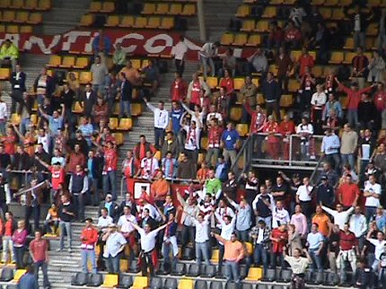
Toch nog een kleine 200 supporters mee.
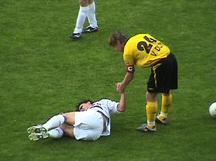
Een fris en compact spelend Roda is voortdurend dreigend en in balbezit.
Hier ontfermt captain Van Dijk zich over een gevallen medemens.
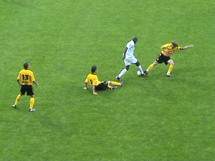
Er werd gevochten om de bal, een heel vernieuwd en vertrouwenwekkend
Roda is
opgestaan.
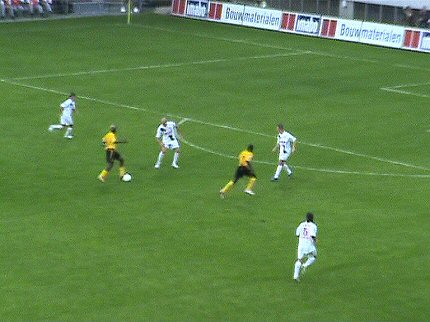
Kone ziet Sonko vertrekken....
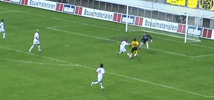
Edrissa Sonko passeert doelman Pasveer: 1-0 (33').
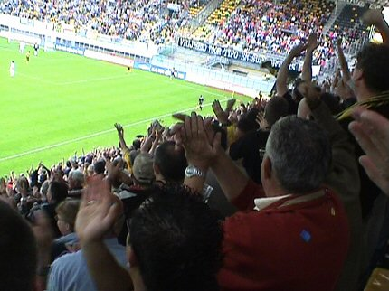
Een fantastische ontlading op de tribunes....
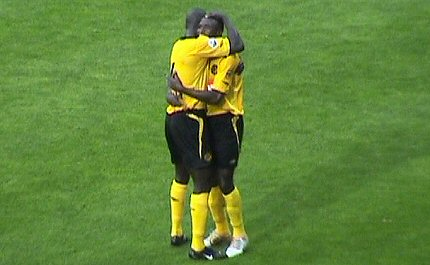
Sonko viert zijn treffer met Kah.
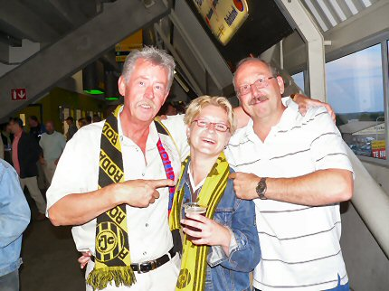
De KONE-boys met in het midden de aanstaande bruid.....
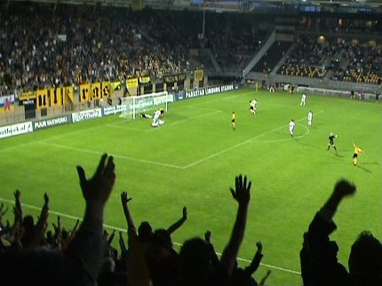
Kone kopt de bevrijdende 2-0 binnen (79').
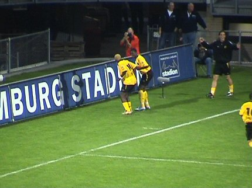
Onnavolgbare Afrikaanse danspasjes....
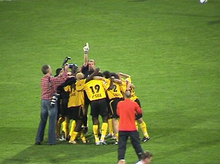
Het oppermachtige Roda dat in de tweede helft iets meer initiatief aan de
tegenstander liet viert hier de vreugde na het laatste fluitsignaal van de
zeer matig acterende scheidsrechter Blom.
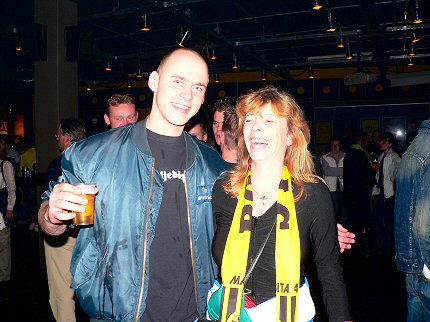
Wir sind Helden ;-)
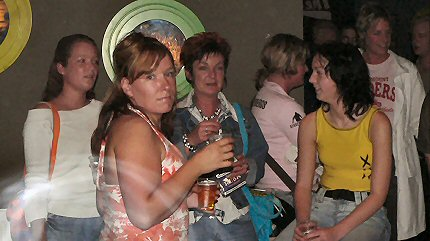
Ei Rodameëdsje is ei good meëdsje.
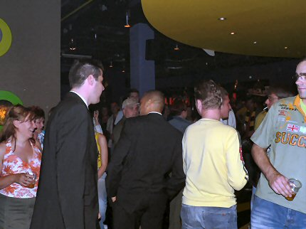
Cristiano en Van den Ouweland bezochten de Kick Off. VdO zie je hier niet.
© Koempels Pleasure Dome
|